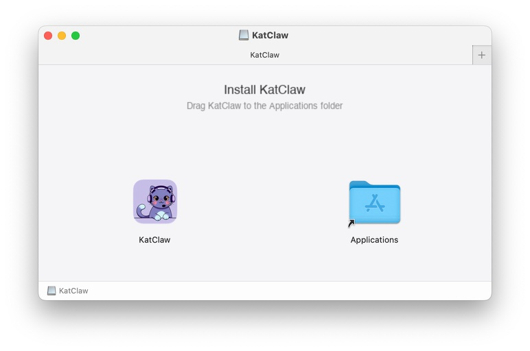
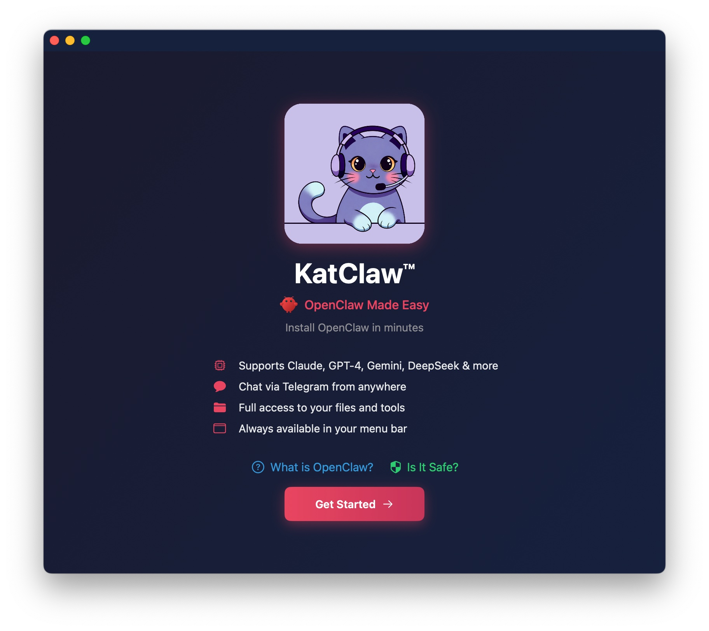
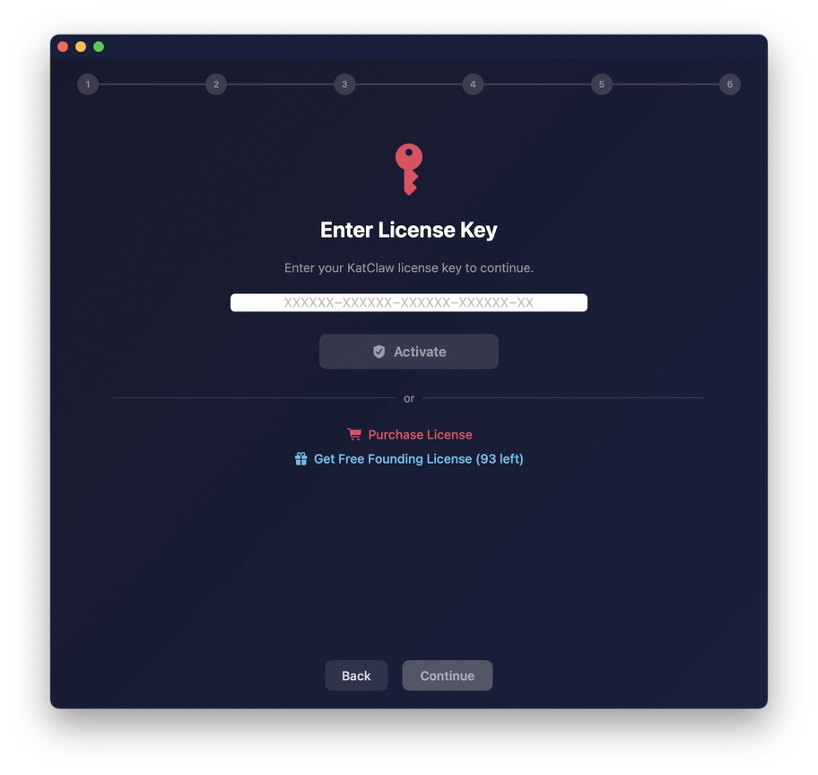
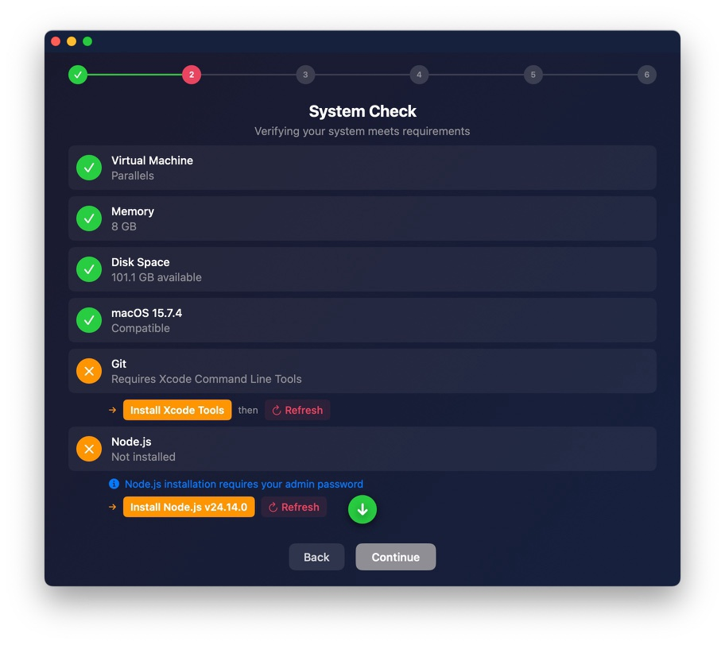
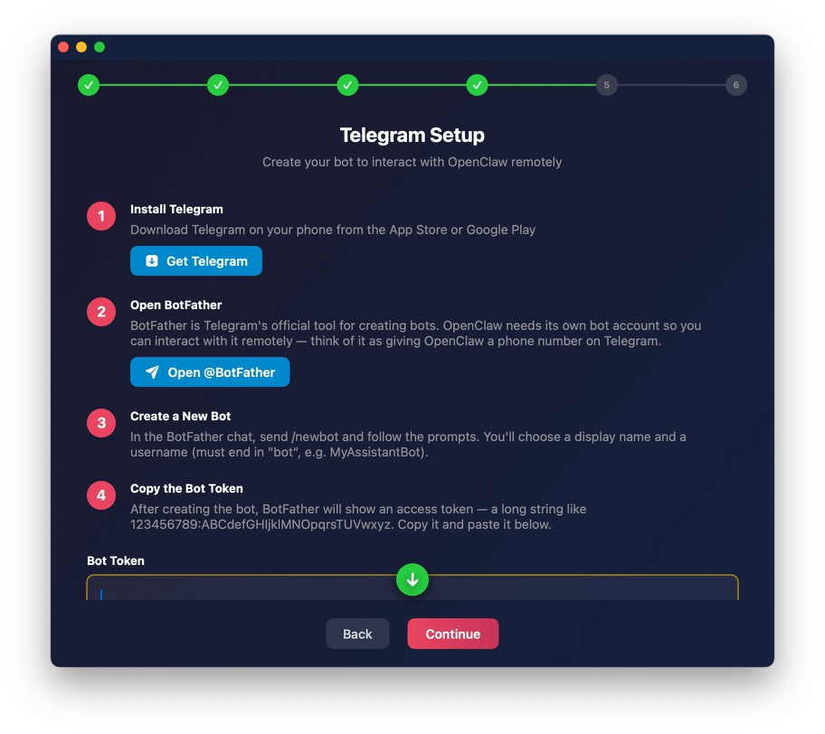
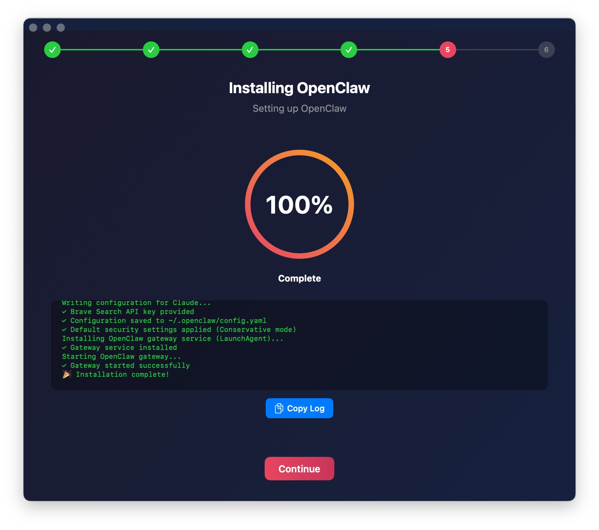

Installation Guide
From download to your first conversation in about 10 minutes.
Requirements
- macOS 14 Sonoma or later
- Apple Silicon or Intel Mac
- Internet connection
- AI provider API key (e.g., Claude, GPT, Gemini, DeepSeek)
- Telegram account (for messaging)
Download the KatClaw DMG from katclaw.ai/download. Open the DMG, drag KatClaw to your Applications folder, and launch it.
On first launch, macOS may ask you to confirm since the app was downloaded from the internet. Click Open to proceed.

The Setup Wizard opens automatically on first launch. This screen introduces what KatClaw does and what you'll configure in the next few steps: your license, AI provider, and messaging channel.

Enter your license key if you already have one (founding or purchased). If you don't have a key yet, you can claim a free founding license right from this screen.
💡 Founding licenses are free and include all features. Claim yours →

Choose how you want to run OpenClaw:
- Standard — Install directly on this Mac. Best for most users.
- Virtual Machine — Install inside a Parallels VM for extra isolation. Advanced users who want a sandboxed environment.

KatClaw checks that Node.js and npm are installed on your system. If they're missing, KatClaw will offer to install them for you automatically.
If you already have Node.js installed, this step completes instantly.

Choose your AI provider and enter your API key. KatClaw supports 8 providers:
- Claude (Anthropic)
- GPT (OpenAI)
- Gemini (Google)
- DeepSeek
- Grok (xAI)
- Kimi (Moonshot)
- OpenRouter (multi-model gateway)
- Local LLM (LM Studio, Ollama, or any OpenAI-compatible server)
Each provider card shows where to get your API key. Pick one, paste your key, and KatClaw verifies it works.
💡 Not sure which to pick? Compare providers and costs →

Choose your messaging platform — this is how you'll chat with your AI agent:
- Telegram — Most popular. Free, fast, works on all devices.
KatClaw generates a secure gateway token that connects your messaging platform to OpenClaw running on your Mac.

Paste your Telegram bot token and click Verify to connect. KatClaw will confirm the connection is working.
💡 Don't have a bot token yet? Open Telegram, search for @BotFather, send /newbot, and follow the prompts. BotFather will give you a token to paste here.

KatClaw now installs OpenClaw automatically. You'll see a progress screen as it:
- Downloads and installs the OpenClaw package
- Configures your AI provider and API key
- Sets up the Telegram bot connection
- Applies security settings
This usually takes 1–2 minutes depending on your internet connection.

You're all set. The OpenClaw gateway is running and your Telegram bot is live.
Open Telegram, find your bot, and send your first message. Try saying "hi" — your AI agent will respond.
KatClaw now lives in your menu bar. Click the icon anytime to check status, change settings, or manage your agent.

Ready to get the most out of your agent?
Read the User's Guide →